Salsa
Cubana
La salsa delle origini: si balla in cerchio, girando attorno al partner, con movimenti fluidi e tanto gioco di coppia. Allegria pura, nata per strada a L'Avana.
Rueda · Son · TimbaCorsi 2026/2027 · iscrizioni aperte
dal 2012 ci piace far Kasino
Salsa e bachata ad Ancona, Civitanova Marche e Osimo/Castelfidardo. Istruttori diplomati, una family che balla tutto l'anno e serate dove impari davvero a scatenarti.
Cosa ballerai
Parti da zero e arrivi in pista. Ogni corso è diviso per livello, così impari al passo giusto e con le persone giuste.
La salsa delle origini: si balla in cerchio, girando attorno al partner, con movimenti fluidi e tanto gioco di coppia. Allegria pura, nata per strada a L'Avana.
Rueda · Son · TimbaLa salsa "in linea": pulita, elegante, veloce. Giri, figure e musicalità, con il partner che si muove su una linea immaginaria. Il ballo di chi ama lo stile.
In linea · Giri · ShinesNata nella Repubblica Dominicana: passi rapidi, gioco di piedi e tanto ritmo di chitarra. È la bachata più autentica, divertente e piena di energia.
Footwork · Ritmo · RadiciOndulazioni, connessione, musicalità. La bachata moderna che mescola influenze diverse e lascia spazio alla creatività: lenta, intensa, spettacolare.
Onde · Connessione · FigureCorsi di ballo 2026/2027
Palestra Millennium
Via Valle Miano, 53 ↗Laboratorio Danza DuePuntoZero
Via Silvio Zavatti, 6 ↗Ipermercato Conad, primo piano sulla destra
Urban Studios
Via Achille Grandi, 27 ↗MeLaLuna NewDance
Via Adriatica, 22 · Castelfidardo ↗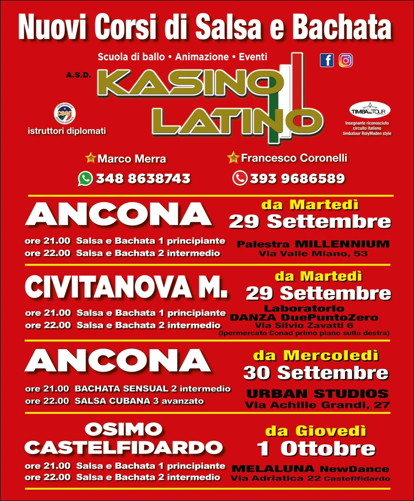
Hai perso una lezione?
Con più sedi in provincia puoi recuperare l'ultima lezione in un'altra città e restare al passo con la tua classe. Nessuno resta indietro.
Chiedi info su WhatsAppPerché Kasino
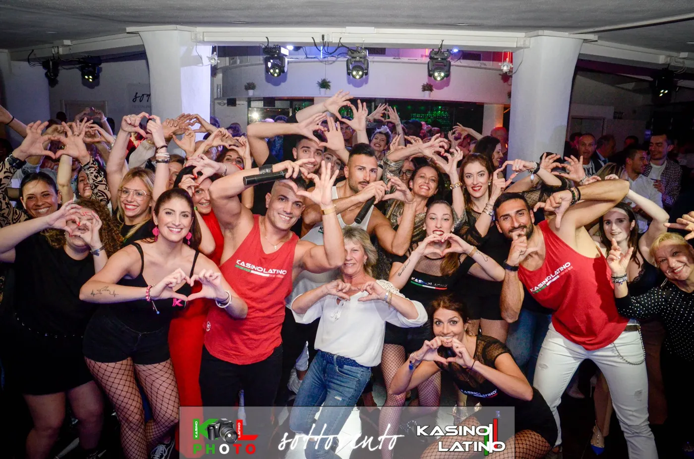
Corsi, stage, serate ed eventi sono il motore del gruppo. Entri per imparare, resti per le persone.
Istruttori diplomati che insegnano le tecniche più aggiornate dei nuovi stili, passo dopo passo.
Sedi in tutta la provincia: se salti una lezione la recuperi altrove e resti al passo con la classe.
Dal primo passo fino ai livelli avanzati: dentro la scuola cresci come ballerino e come persona, fino a ottimi livelli.
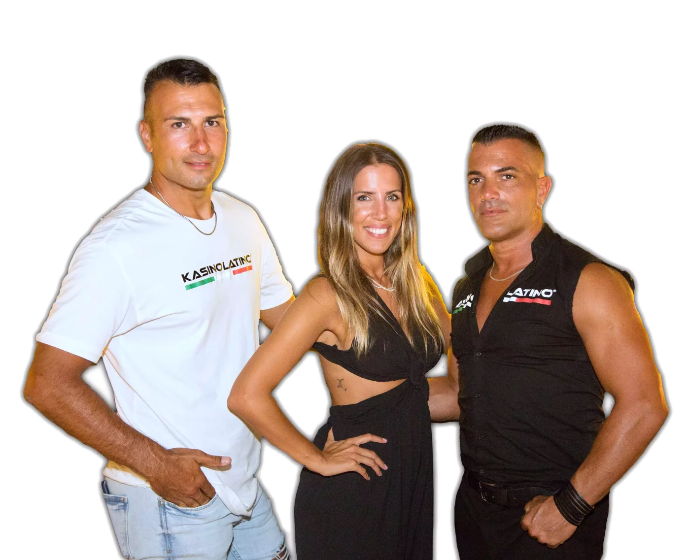
Istruttori diplomati certificati
Vi guidano nello splendido mondo dei balli caraibici: dal primo passo base fino alle figure più avanzate, con la pazienza di chi insegna da anni e l'energia di chi in pista ci vive.
Musica fin dalle medie, il ballo a 17 anni con un corso di salsa e bachata. Nel 2004 vince più titoli a Torino, la sua città natale. Oggi è istruttore di balli caraibici, DJ caraibico e animatore: ha fatto ballare migliaia di persone ai suoi eventi.
Istruttore Kasino Latino e riferimento per i corsi: scrivigli o chiamalo al 393 968 6589.
Istruttori diplomati CSEN · Insegnante riconosciuto nel circuito italiano TimbaTour (RolyMaden style)
Stasera facciamo Kasino
Quello che impari a lezione lo porti in pista. Ci trovi alle nostre serate, con lo staff animazione pronto a trascinarti in salsa, bachata, merengue e balli di gruppo.
La serata del mercoledì con lo staff animazione Kasino Latino.
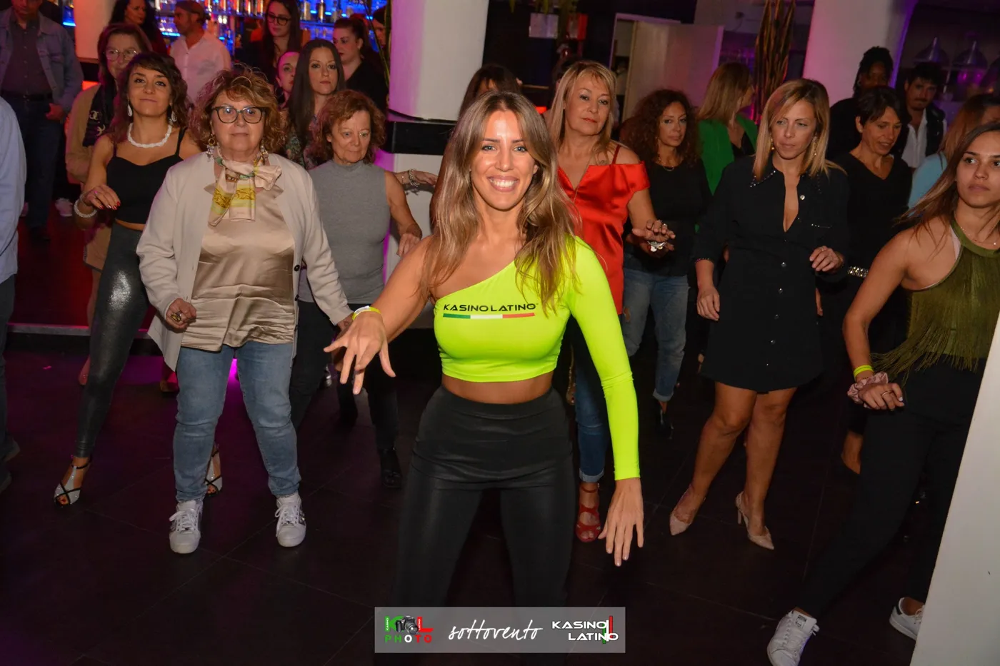
Animazione & eventi
Portiamo il nostro show dove vuoi tu: locali, eventi, feste private e compleanni. Un pacchetto completo per una serata che la gente si ricorderà.
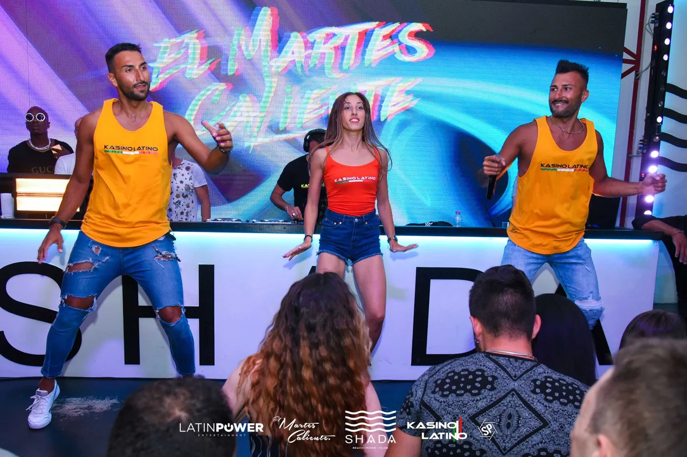
Staff animazione
Ti accompagnano con il sorriso nei ritmi caraibici. Un'esperienza unica per tutti. Ti aspettiamo alle nostre serate!
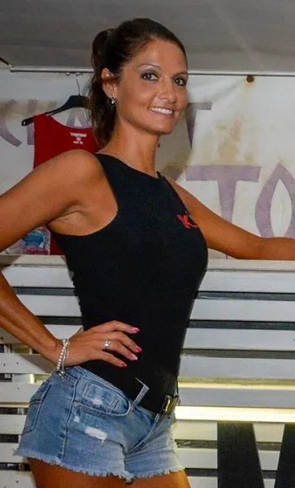
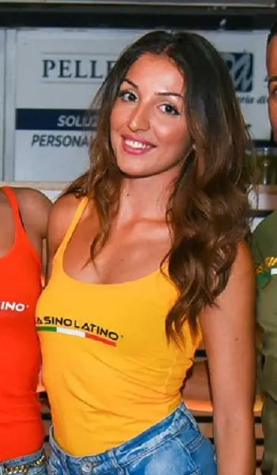
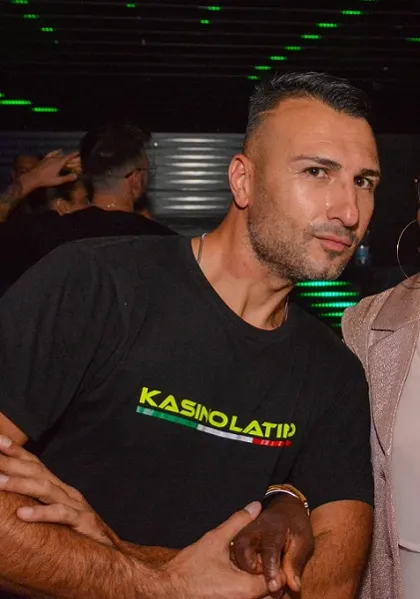
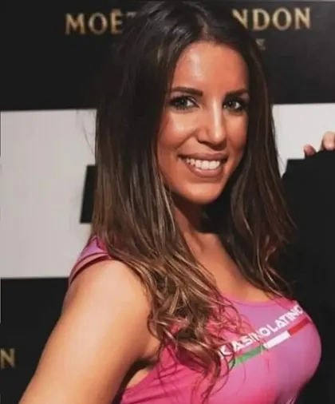
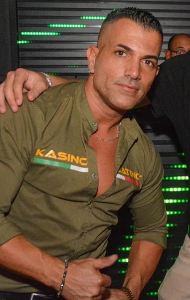
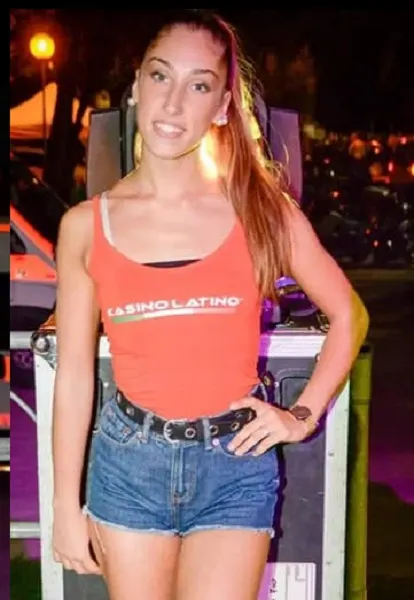
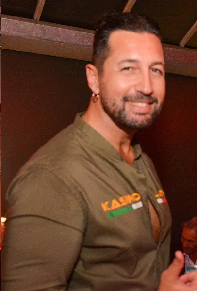
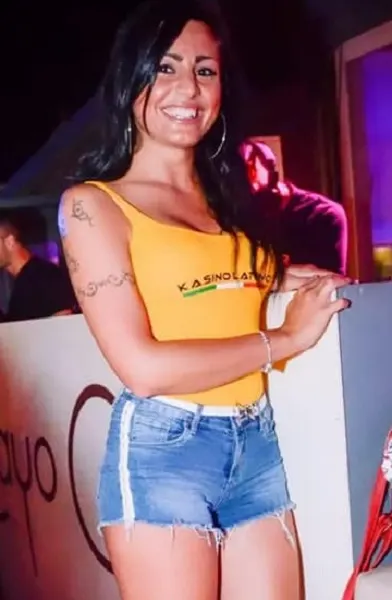
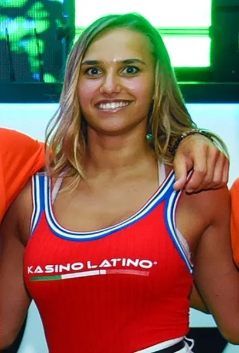
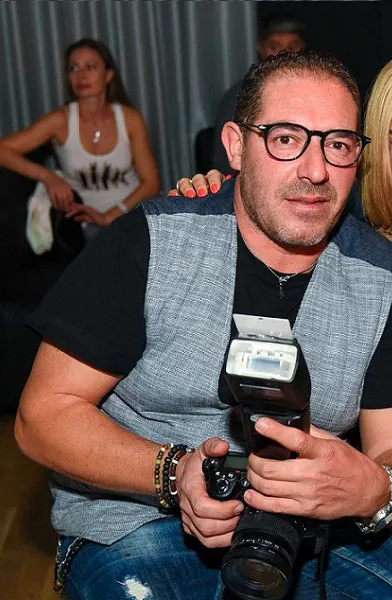
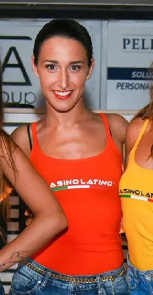
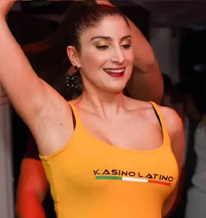
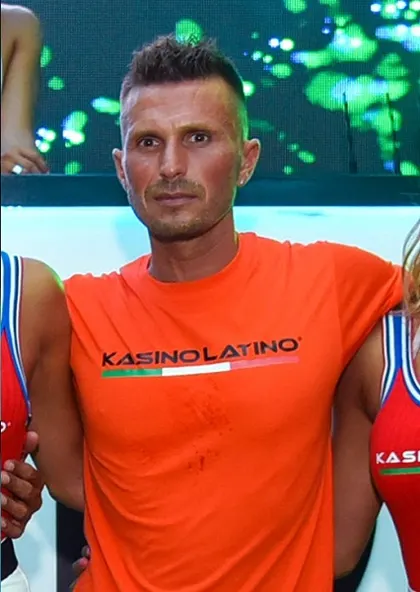
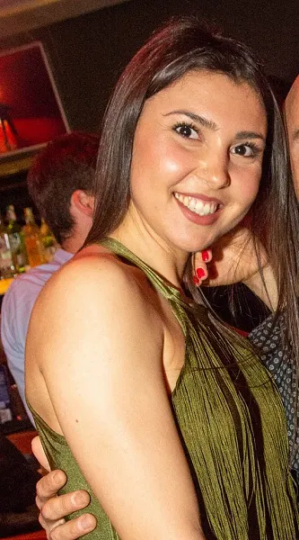
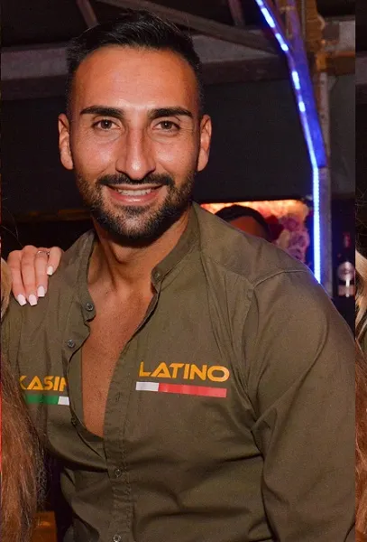
Sound & video
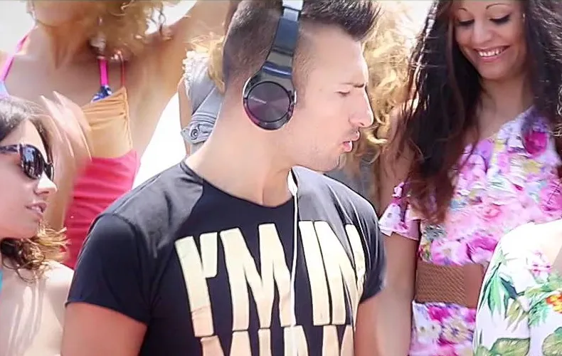
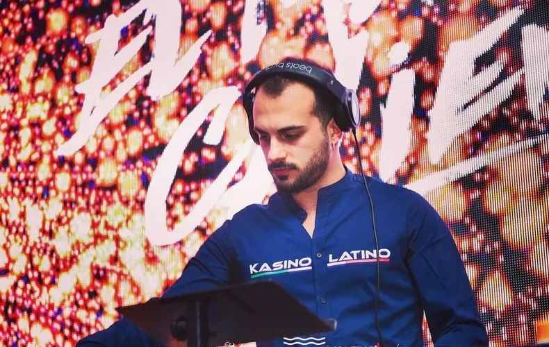
Il sound delle nostre serate: salsa, bachata e tutto quello che ti fa restare in pista fino alla fine.
I video si caricano da YouTube solo quando ne apri uno: da quel momento Google può trattare alcuni tuoi dati. Info privacy
Seguici nei migliori festival e congressi
Stage con maestri internazionali, congressi e festival: con Kasino Latino non balli solo in sala, vivi la scena caraibica insieme al gruppo.
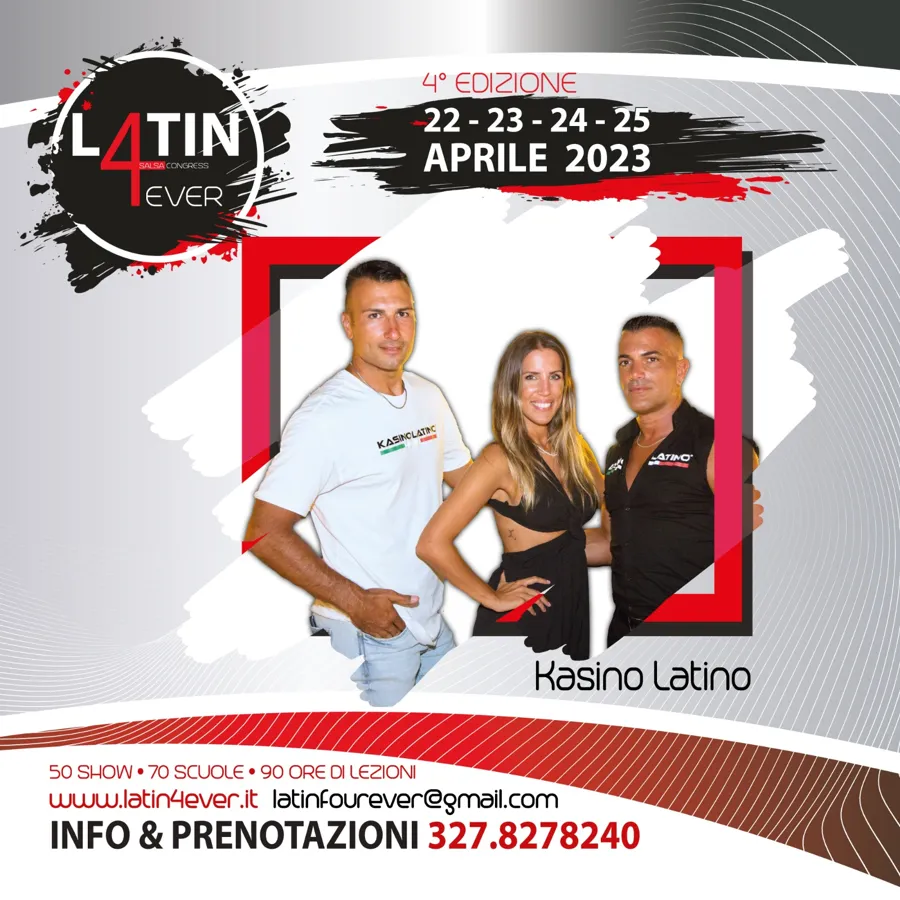
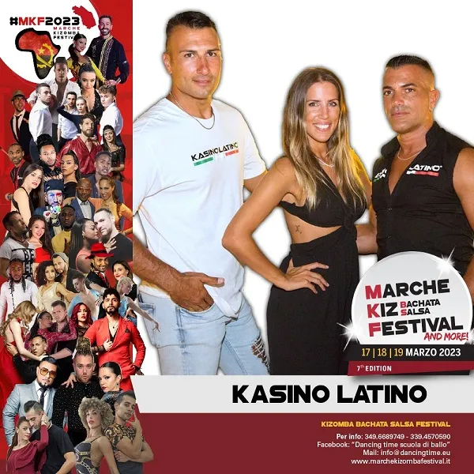
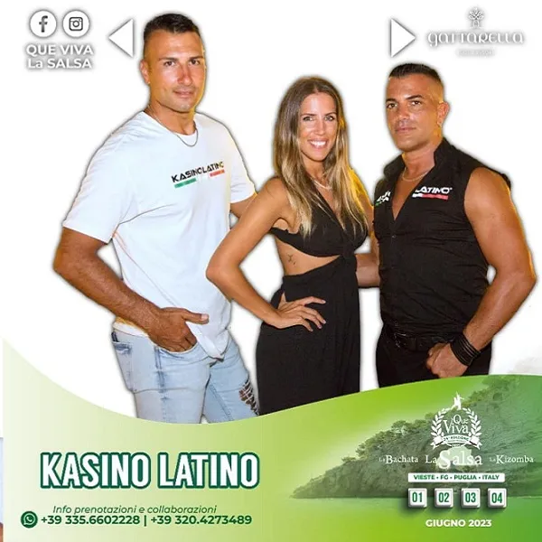
Come eravamo
Dal 2012 a oggi: anni di serate, show e facce che ormai sono famiglia.
Domande frequenti
Perfetto: è esattamente da lì che si parte.
Certo. Il livello 1 "principiante" di salsa e bachata è pensato proprio per chi parte da zero: ad Ancona e Civitanova il martedì e a Osimo/Castelfidardo il giovedì, sempre alle 21:00.
Sì: la prima lezione di prova è gratuita. Scrivici su WhatsApp dicendo quale sede preferisci e ti aspettiamo in sala.
Nessun problema: con più sedi in provincia puoi recuperare l'ultima lezione in un'altra città e restare al passo con la tua classe.
Sì: livello 2 intermedio in tutte le sedi, e il mercoledì agli Urban Studios di Ancona c'è Bachata Sensual 2 alle 21:00 e Salsa Cubana 3 (avanzato) alle 22:00.
Per quote e pacchetti scrivici su WhatsApp al 348 863 8743 o chiama il 393 968 6589: ti rispondiamo con tutti i dettagli per la tua sede.
Sì: DJ, fotografo, animazione e service. Contattaci per organizzare la tua serata o il tuo evento.
Prova gratuita
Scegli la tua sede: si apre WhatsApp con il messaggio già pronto. Tu premi invia, noi ti teniamo un posto in pista.
I nostri partner
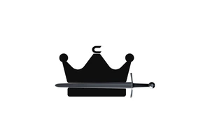
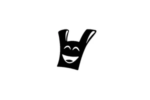
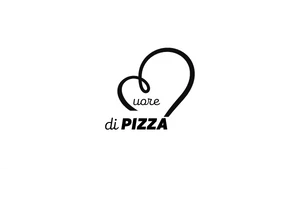
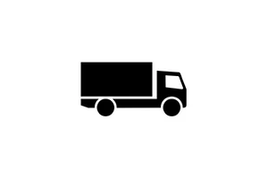
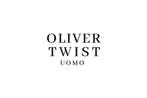
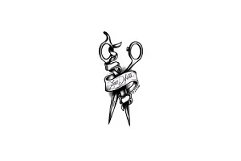